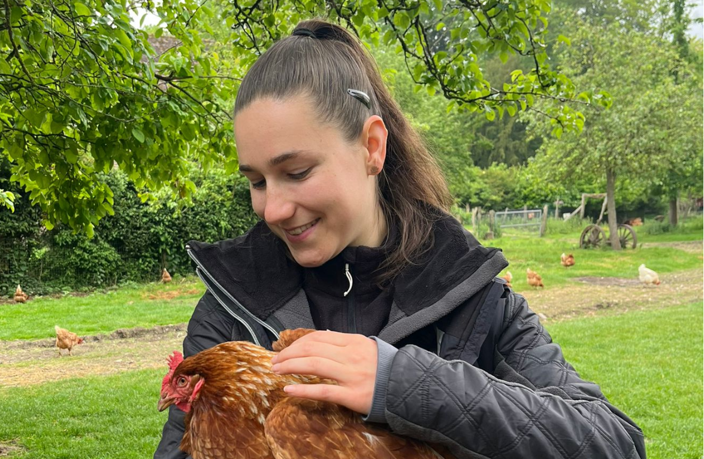
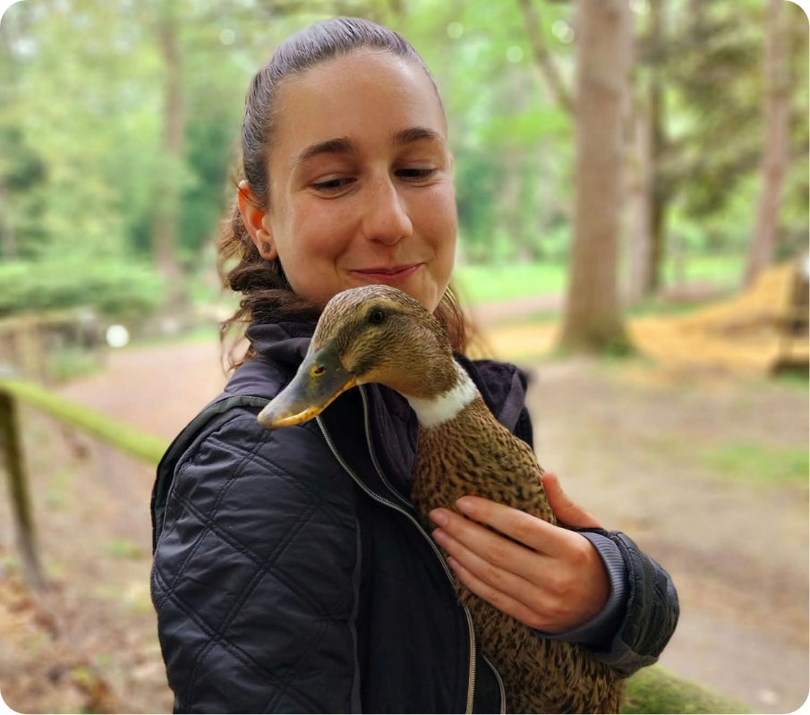

Betty Debenest
Ostéopathe pour animaux
CHER (18), INDRE (36), ALLIER (03)
Inscrite au Registre National d'Aptitude
sous le numéro OA 1769

Présentation
Je suis Betty DEBENEST, ostéopathe pour animaux reconnue par le Conseil National de l’Ordre Vétérinaire.
J’interviens à domicile et en ferme dans les départements du Cher (18), de l’Indre (36), et de l’Allier (03).
Quand consulter?
✳
Animaux sportifs
✳
Suivi post-chirurgical
✳
Perte de performances
✳
Animaux de travail
✳
Séance après chute/coup
✳
Suivi de reproduction
✳
Troubles digestifs
✳
Suivi de croissance
✳
Rétention de méconium
✳
Animaux âgés
L’ostéopathie améliore la qualité de vie de vos animaux.
Prendre RDV